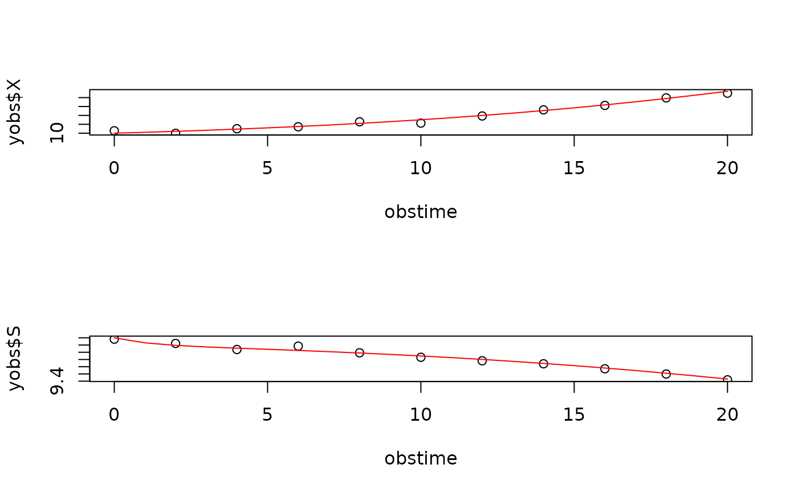

Parameter Fitting for odeModel Objects
fitOdeModel.RdFit parameters of odeModel objects to measured data.
Usage
fitOdeModel(simObj, whichpar = names(parms(simObj)), obstime, yobs,
sd.yobs = as.numeric(lapply(yobs, sd)), initialize = TRUE,
weights = NULL, debuglevel = 0, fn = ssqOdeModel,
method = c("Nelder-Mead", "BFGS", "CG", "L-BFGS-B", "SANN", "PORT",
"newuoa", "bobyqa"),
lower = -Inf, upper = Inf, scale.par = 1,
control = list(), ...)Arguments
- simObj
a valid object of class
odeModel,- whichpar
character vector with names of parameters which are to be optimized (subset of parameter names of the
simObj),- obstime
vector with time steps for which observational data are available,
- yobs
data frame with observational data for all or a subset of state variables. Their names must correspond exacly with existing names of state variables in the
odeModel,- sd.yobs
vector of given standard deviations (or scale) for all observational variables given in
yobs. If no standard deviations (resp. scales) are given, these are estimated fromyobs,- initialize
optional boolean value whether the simObj should be re-initialized after the assignment of new parameter values. This can be necessary in certain models to assign consistent values to initial state variables if they depend on parameters.
- weights
optional weights to be used in the fitting process. See cost function (currently only
ssqOdeModel) for details.- debuglevel
a positive number that specifies the amount of debugging information printed,
- fn
objective function, i.e. function that returns the quality criterium that is minimized, defaults to
ssqOdeModel,- method
optimization method, see
nlminbfor the PORT algorithm,newuoaresp.bobyqafor the newuoa and bobyqa algorithms, andoptimfor all other methods,- lower, upper
bounds of the parameters for method L-BFGS-B, see
optim, PORT seenlminband bobyqabobyqa. The bounds are also respected by other optimizers by means of an internal transformation of the parameter space (seep.constrain). In this case, named vectors are required.- scale.par
scaling of parameters for method PORT see
nlminb. In many cases, automatic scaling (scale.par = 1) does well, but sometimes (e.g. if parameter ranges differ several orders of magnitude) manual adjustment is required. Often you get a reasonable choice if you setscale.par = 1/upper. The parameter is ignored by all other methods. For"Nelder-Mead","BFGS","CG"and"SANN"parameter scaling occurs as a side effect of parameter transformation withp.constrain.- control
- ...
additional parameters passed to the solver method (e.g. to
lsoda).
Details
This function works currently only with odeModel objects where
parms is a vector, not a list.
Note also that the control parameters of the PORT algorithm are different from the control parameters of the other optimizers.
Value
A list with the optimized parameters and other information, see
optim resp. nlminb for
details.
References
Gay, D. M. (1990) Usage Summary for Selected Optimization Routines. Computing Science Technical Report No. 153. AT&T Bell Laboratories, Murray Hill, NJ.
Powell, M. J. D. (2009). The BOBYQA algorithm for bound constrained optimization without derivatives. Report No. DAMTP 2009/NA06, Centre for Mathematical Sciences, University of Cambridge, UK.
See also
ssqOdeModel, optim, nlminb,
bobyqa
Note also that package FME function
modFit has even more flexible means to fit
model parameters.
Examples are given in the package vignettes.
Examples
## ======== load example model =========
data(chemostat)
#source("chemostat.R")
## derive scenarios
cs1 <- cs2 <- chemostat
## generate some noisy data
parms(cs1)[c("vm", "km")] <- c(2, 10)
times(cs1) <- c(from=0, to=20, by=2)
yobs <- out(sim(cs1))
obstime <- yobs$time
yobs$time <- NULL
yobs$S <- yobs$S + rnorm(yobs$S, sd= 0.1 * sd(yobs$S))*2
yobs$X <- yobs$X + rnorm(yobs$X, sd= 0.1 * sd(yobs$X))
## ======== optimize it! =========
## time steps for simulation, either small for rk4 fixed step
# times(cs2)["by"] <- 0.1
# solver(cs2) <- "rk4"
## or, faster: use lsoda and and return only required steps that are in the data
times(cs2) <- obstime
solver(cs2) <- "lsoda"
## Nelder-Mead (default)
whichpar <- c("vm", "km")
res <- fitOdeModel(cs2, whichpar=whichpar, obstime, yobs,
debuglevel=0,
control=list(trace=TRUE))
#> Nelder-Mead direct search function minimizer
#> function value for initial parameters = 66.170275
#> Scaled convergence tolerance is 9.86014e-07
#> Stepsize computed as 0.200000
#> BUILD 3 68.509042 1.639291
#> LO-REDUCTION 5 66.170275 1.639291
#> HI-REDUCTION 7 42.746469 1.639291
#> HI-REDUCTION 9 21.894667 1.639291
#> HI-REDUCTION 11 10.473258 1.639291
#> LO-REDUCTION 13 9.340142 0.361660
#> HI-REDUCTION 15 2.369956 0.361660
#> HI-REDUCTION 17 1.639291 0.361660
#> HI-REDUCTION 19 0.589096 0.361660
#> HI-REDUCTION 21 0.546330 0.361660
#> HI-REDUCTION 23 0.396431 0.361660
#> HI-REDUCTION 25 0.376053 0.361660
#> HI-REDUCTION 27 0.365065 0.360823
#> LO-REDUCTION 29 0.361660 0.360574
#> HI-REDUCTION 31 0.360823 0.359692
#> LO-REDUCTION 33 0.360574 0.359692
#> HI-REDUCTION 35 0.359863 0.359692
#> HI-REDUCTION 37 0.359708 0.359692
#> HI-REDUCTION 39 0.359701 0.359680
#> REFLECTION 41 0.359692 0.359659
#> LO-REDUCTION 43 0.359680 0.359656
#> REFLECTION 45 0.359659 0.359650
#> REFLECTION 47 0.359656 0.359634
#> LO-REDUCTION 49 0.359650 0.359634
#> REFLECTION 51 0.359636 0.359628
#> HI-REDUCTION 53 0.359634 0.359627
#> EXTENSION 55 0.359628 0.359611
#> LO-REDUCTION 57 0.359627 0.359611
#> EXTENSION 59 0.359620 0.359593
#> EXTENSION 61 0.359611 0.359563
#> EXTENSION 63 0.359593 0.359518
#> EXTENSION 65 0.359563 0.359429
#> EXTENSION 67 0.359518 0.359319
#> EXTENSION 69 0.359429 0.359069
#> EXTENSION 71 0.359319 0.358846
#> EXTENSION 73 0.359069 0.358251
#> LO-REDUCTION 75 0.358846 0.358251
#> EXTENSION 77 0.358254 0.357313
#> EXTENSION 79 0.358251 0.356619
#> EXTENSION 81 0.357313 0.355516
#> EXTENSION 83 0.356619 0.353400
#> LO-REDUCTION 85 0.355516 0.353400
#> EXTENSION 87 0.353943 0.350972
#> EXTENSION 89 0.353400 0.348454
#> EXTENSION 91 0.350972 0.346373
#> EXTENSION 93 0.348454 0.342513
#> LO-REDUCTION 95 0.346373 0.342513
#> REFLECTION 97 0.343686 0.342314
#> LO-REDUCTION 99 0.342513 0.342244
#> HI-REDUCTION 101 0.342314 0.342155
#> HI-REDUCTION 103 0.342244 0.342155
#> HI-REDUCTION 105 0.342174 0.342155
#> HI-REDUCTION 107 0.342155 0.342139
#> HI-REDUCTION 109 0.342155 0.342131
#> LO-REDUCTION 111 0.342139 0.342131
#> HI-REDUCTION 113 0.342135 0.342131
#> LO-REDUCTION 115 0.342133 0.342131
#> Exiting from Nelder Mead minimizer
#> 117 function evaluations used
#>
coef(res)
#> vm km
#> 1.681040 6.836754
## assign fitted parameters to the model, i.e. as start values for next step
parms(cs2)[whichpar] <- coef(res)
## alternatively, L-BFGS-B (allows lower and upper bounds for parameters)
res <- fitOdeModel(cs2, whichpar=c("vm", "km"), obstime, yobs,
debuglevel=0, fn = ssqOdeModel,
method = "L-BFGS-B", lower = 0,
control=list(trace=TRUE),
atol=1e-4, rtol=1e-4)
#> final value 0.341905
#> converged
#> CONVERGENCE: REL_REDUCTION_OF_F <= FACTR*EPSMCH
coef(res)
#> vm km
#> 1.681058 6.836752
## alternative 2, transform parameters to constrain unconstrained method
## Note: lower and upper are *named* vectors
res <- fitOdeModel(cs2, whichpar=c("vm", "km"), obstime, yobs,
debuglevel=0, fn = ssqOdeModel,
method = "BFGS", lower = c(vm=0, km=0), upper=c(vm=4, km=20),
control=list(trace=TRUE),
atol=1e-4, rtol=1e-4)
#> initial value 0.341907
#> iter 10 value 0.341903
#> final value 0.341903
#> converged
#>
coef(res)
#> vm km
#> 1.674437 6.771417
## alternative 3a, use PORT algorithm
parms(cs2)[whichpar] <- c(vm=1, km=2)
lower <- c(vm=0, km=0)
upper <- c(vm=4, km=20)
res <- fitOdeModel(cs2, whichpar=c("vm", "km"), obstime, yobs,
debuglevel=0, fn = ssqOdeModel,
method = "PORT", lower = lower, upper = upper,
control=list(trace=TRUE),
atol=1e-4, rtol=1e-4)
#> 0: 66.170275: 1.00000 2.00000
#> 1: 38.366379: 1.09965 1.99166
#> 2: 29.099196: 1.11957 1.98981
#> 3: 8.9024474: 1.15939 1.98603
#> 4: 2.6418271: 1.17531 1.98447
#> 5: 0.41759591: 1.19123 1.98288
#> 6: 0.36471617: 1.19019 1.99884
#> 7: 0.35906630: 1.19179 2.00863
#> 8: 0.35895389: 1.19287 2.01891
#> 9: 0.35860415: 1.19709 2.06002
#> 10: 0.35750091: 1.21388 2.22449
#> 11: 0.35537057: 1.25445 2.62316
#> 12: 0.35200534: 1.32858 3.35330
#> 13: 0.34759153: 1.44700 4.52138
#> 14: 0.34433004: 1.56674 5.70403
#> 15: 0.34274393: 1.65545 6.58120
#> 16: 0.34226237: 1.69683 6.99111
#> 17: 0.34216372: 1.70253 7.04835
#> 18: 0.34213971: 1.69391 6.96364
#> 19: 0.34213174: 1.68261 6.85229
#> 20: 0.34213075: 1.67831 6.80985
#> 21: 0.34213071: 1.67797 6.80643
#> 22: 0.34213071: 1.67811 6.80783
#> 23: 0.34213071: 1.67807 6.80740
#> 24: 0.34213071: 1.67804 6.80714
#> relative convergence (4)
coef(res)
#> vm km
#> 1.678042 6.807142
## alternative 3b, PORT algorithm with manual parameter scaling
res <- fitOdeModel(cs2, whichpar=c("vm", "km"), obstime, yobs,
debuglevel=0, fn = ssqOdeModel,
method = "PORT", lower = lower, upper = upper, scale.par = 1/upper,
control=list(trace=TRUE),
atol=1e-4, rtol=1e-4)
#> 0: 66.170275: 1.00000 2.00000
#> 1: 59.991527: 1.02792 1.94157
#> 2: 38.551227: 1.08347 1.82135
#> 3: 25.762733: 1.10544 1.77053
#> 4: 1.2124318: 1.14919 1.66664
#> 5: 0.38287481: 1.15462 1.65300
#> 6: 0.36411648: 1.15305 1.62362
#> 7: 0.36293074: 1.15560 1.65123
#> 8: 0.34902442: 1.33158 3.38748
#> 9: 0.34426129: 1.46544 4.70893
#> 10: 0.34252736: 1.57886 5.82839
#> 11: 0.34216981: 1.64589 6.48995
#> 12: 0.34213207: 1.67269 6.75439
#> 13: 0.34213082: 1.67772 6.80399
#> 14: 0.34213074: 1.67826 6.80932
#> 15: 0.34213072: 1.67831 6.80978
#> 16: 0.34213071: 1.67804 6.80716
#> 17: 0.34213071: 1.67804 6.80709
#> 18: 0.34213071: 1.67804 6.80710
#> relative convergence (4)
coef(res)
#> vm km
#> 1.678038 6.807104
## set model parameters to fitted values and simulate again
parms(cs2)[whichpar] <- coef(res)
times(cs2) <- c(from=0, to=20, by=1)
ysim <- out(sim(cs2))
## plot results
par(mfrow=c(2,1))
plot(obstime, yobs$X, ylim = range(yobs$X, ysim$X))
lines(ysim$time, ysim$X, col="red")
plot(obstime, yobs$S, ylim= range(yobs$S, ysim$S))
lines(ysim$time, ysim$S, col="red")
